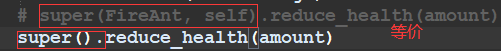
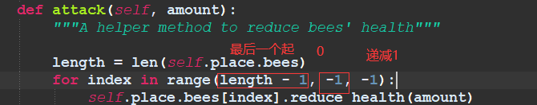
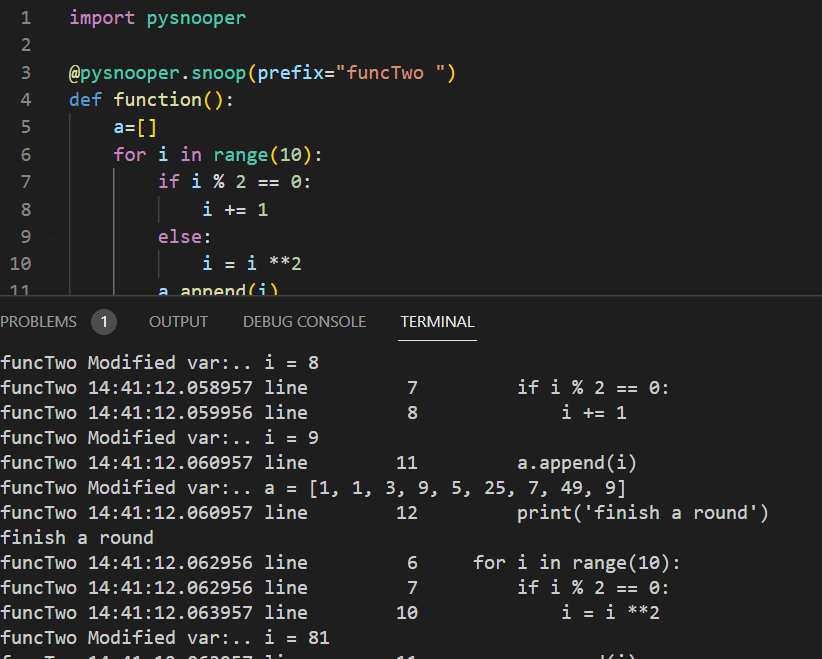
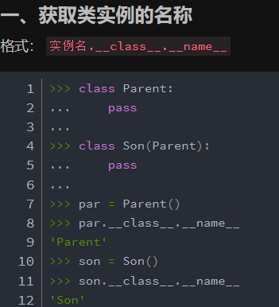
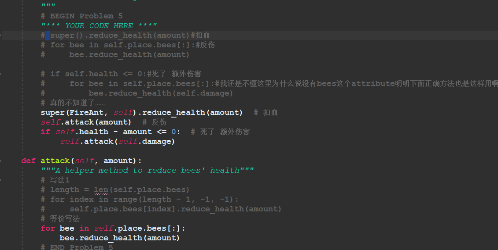
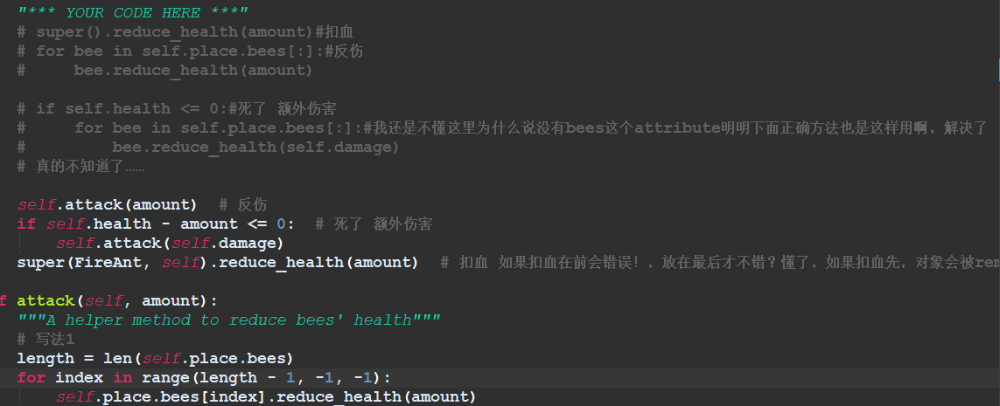
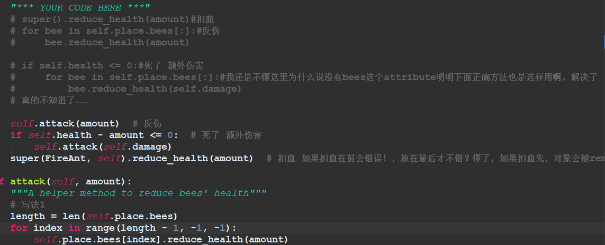

Syntax Start
- learn_refactor_init
就是说 super().__init__(arg) 等价于Father.__init__(self,arg)
说是override或者refactor，如果你喜欢在孙子类调用父亲和爷爷的init(如果有)，就可以重写两次……
本质就是函数 - list(tuple)orlist(string),list(list)is wrong
word(arg) - 
- 
- python学习项目……太多了，还是好好做cs61a吧
- pyspooner_trial
- Python实例方法、静态方法和类方法详解（包含区别和用法）方法有3种，instance/@staticmethod/@classmethod
- 类属性属于类的，类所有对象共享
实例属性只属于某个实例对象，实例属性只能通过实例对象名访问 - hasattr(HungryAnt, 'chew_timer') 判断chew_timer是不是类属性
- 还有这种实例返回自己创建的类的名称的
- assert是一个缩小版的if,assert condition,'string'===== if condition is True pass,else print(string)
Syntax End
疑问……可能不是很重要

解决了

解决了
